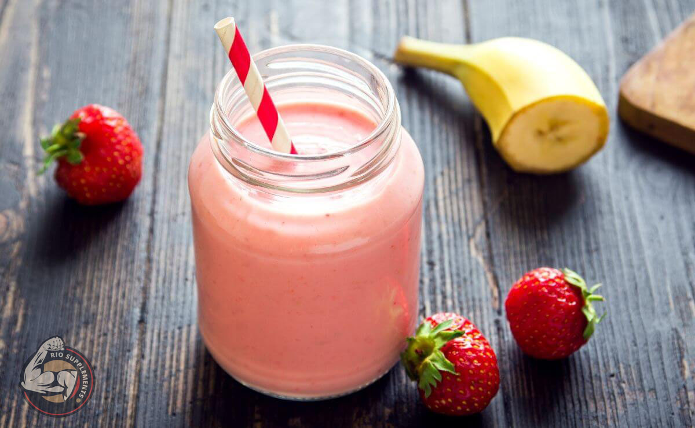

Batidos



INGREDIENTES
PROCESO
INGREDIENTES
- Proteina
- 1 platano
- 10 fresas
- 1 taza de yogurt natural
- 2 cucharadas de peanut butter
PROCESO
- En una licuadora agrega 2 scoops de proteina
- Pela el platano, partelo por la mkitad y agregalo a la licuadora
- Agrega las 10 fresas
- Pon la taza de yogurt natural y 2 cucharadas de peanut butter
- licualo y listo
© 2023 Derechos reservados
Desarrollado por: Joshua Gybram Esparza Pardo
Matricula:02007585 Grupo:606
Plantel Nueva Tijuana